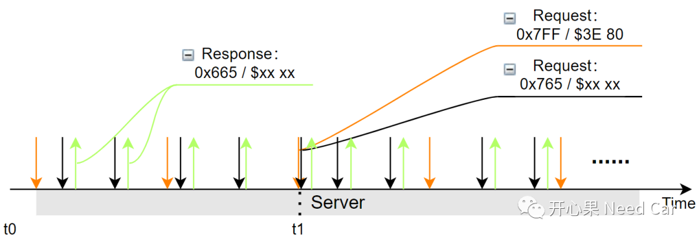
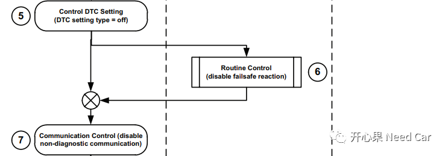
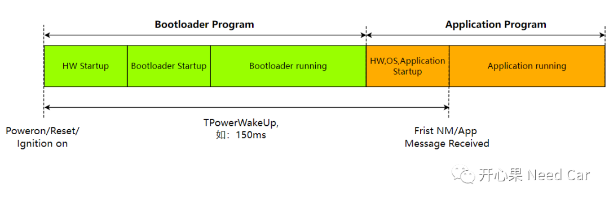
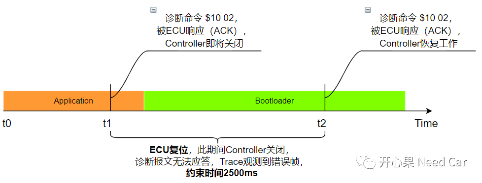
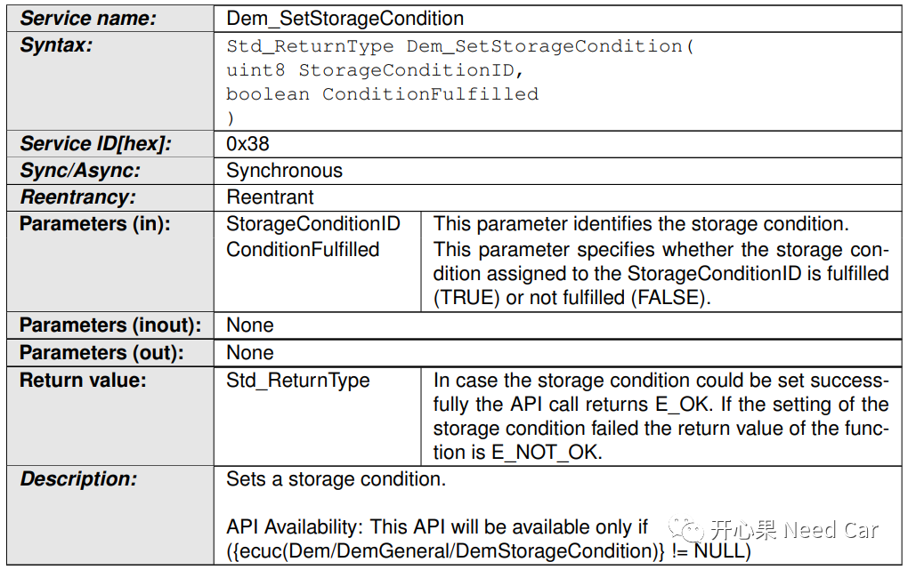

开心果 Need Car · 2022-05-06T19:02:00+08:00 · 微信原文
“中年以后的男人，时常会觉得孤独，因为他一睁开眼睛，周围都是要依靠他的人，却没有他可以依靠的人。”- 张爱玲
QA1：$3E 00/80处理知多少
答：首先，我们需要知道，TesterPresent (0x3E) service不仅支持功能寻址，也支持物理寻址。工程项目中，尤其刷写过程中，常使用功能寻址，周期性发送$3E 00/80，似乎忘了该服务支持物理寻址。当然，这里要讨论的点不在这，我们关注功能寻址$3E 00/80发送时，并行发送物理寻址的诊断请求，Server应该如何处理。
举例：功能寻址ID：0x7FF（Request），物理寻址ID：0x665（Response）、0x765（Request）。
程序升级过程中，为了保持升级ECU以及网段内其他ECU呆在编程会话下，会使用功能寻址周期性发送$3E 80服务，同时使用物理寻址的ID升级目标ECU，如下所示。但是在某个时刻（如下：t1），功能寻址的$3E 80请求服务和某个物理寻址的请求服务$xx xx，同时请求DCM处理，DCM先处理谁呢？

如果Xx_Tp层只有一个缓存区，意味着t1时刻，这两个服务有一个会被另一个覆盖。所以，这里就需要两个缓存区，能在同一时刻缓存两个诊断服务请求，所以，从软件实现的角度考虑，$3E 80服务需要一个额外的缓存区缓存$3E 80服务请求，让ECU的诊断栈可以及时处理，避免ECU因S3超时而进入非编程会话。所以，当一个物理诊断请求和一个功能寻址的$3E 80请求同时收到时，一般需要优先处理功能寻址的$3E 80服务。
QA2：程序刷写中，0x28、0x85服务可以不用吗？
答：可以。做诊断的朋友可能比较清楚，常规的软件升级过程中，用
0x85（Control DTC Setting）服务，使能/禁用DTC；用0x28（Communication Control）服务，使能/禁用非诊断报文的通信，如下所示：

如果不用0x85和0x28服务，那如何确保DTC不被误报，同时又确保总线只给诊断报文使用呢？这里给大家分享一种不用0x85和0x28服务，也能正常升级Application程序的情况，需要满足如下几点要求：
使用功能寻址，发送$10 02/82，使得当前网段内的所有ECU均跳转到Bootloader程序，进入编程会话；
在Bootloader程序中，没有应用报文外发；
在Bootloader程序中，不支持DTC的Monitor。
一般来说，DTC的Monitor只会在Application中实现。功能寻址$10 02/82的诊断指令，相当于一个复位，目标网段内的所有ECU走下电流程，随后所有ECU通信栈和诊断栈关闭。所以，可以将$10 02/82诊断服务看作0x85和0x28服务的合集。之后，网段内的所有ECU进入Bootloader，且进入编程会话(0x02)，只要在此会话下呆着，也就没有了ECU之间的通信，因此，0x28服务可以不用，Bootloader内又不支持DTC处理，所以,0x85服务也可以不用。
提示：车辆下线以后，需要通过预留的OBD接口升级车辆内的某个ECU（OTA目前在一些高端车上使用，咱普通老百姓的车，多数还是使用OBD接口方式升级），而且需要通过网关节点转发。车辆故障时，去4S店维修，升级某个ECU时，需要考虑关闭同一网段内非升级ECU的通信和DTC监控问题。更多细节参考前文基于UDS刷写，0x28、0x85服务可以不用吗?。
QA3：程序复位方式有哪些？
答：提到程序复位，大家最先想到的是诊断命令，比如：$11服务、$10 02/82服务。这里提另一种情况，使用应用报文复位。这样说有点反应不过来？别急。我们假设这样一种情况：某高端车型，需要通过OTA升级某个APP，或者升级某个ECU。这种行为属于驾驶员的自主行为，就如同我们升级手机中的某个APP一样，我们只要点击某个APP升级即可。同样，在车上我们可以通过点击中控屏的的升级图标完成某个ECU的程序升级。那这个点击动作表示什么呢？这里你就可以把这个点击动作看成发送信号，而这个信号可以通过应用报文携带，这就是平时诊断需求中看到的另一种复位方式，即：收到特定应用报文的某个信号（如：UpdateProgramm_Signal = Boot），等价于$10 82服务。
但是，升级需要考虑安全，任何对驾/乘人员造成危害的动作都必须禁止，所以收到UpdateProgramm_Signal = Boot时，需要检查其升级的条件，该条件可以参考$10 02服务的执行条件，比如：车速、诊断电压、Busoff与否等信息。
提示：不考虑程序异常复位
QA4：通信启动时间和诊断复位启动时间是一回事吗？
答：看到这两个时间名词是不是有点迷糊？我们解释一下：
通信启动时间：是指ECU冷启（主芯片uC被供电）或者网络休眠后被唤醒，发出第一帧报文的时间，比如：从收到一帧有效网络管理报文到节点发出第一帧报文时间（如果节点网络是Passive Mode，外发第一帧报文是应用报文；如果节点网络非Passive Mode，外发第一帧报文是网络管理报文），一般会约束通信启动的最大时间100ms/150ms。如下所示：

如果是Security Bootloader，此时间可以被放宽，比如：250ms。
诊断复位启动时间：是指ECU在运行Application程序的过程中，从收到诊断复位指令(如：$10 02/82或者$11 01/81)到进入Bootloader程序，恢复通信功能的时间。测试中常用的测试手法：在Application程序的t1时刻，周期性(比如：1ms或者5ms)发送诊断指令$10 82，之后Trace窗口发出错误帧（t1~t2时间内），到t2时刻，ECU的Bootloader程序第一次成功响应诊断指令$10 82，判断t2 - t1≤ 诊断复位启动的最大时间，比如：2500ms。

对比上述两图，似乎觉得诊断复位启动时间所经历的路程更短，时间不应该短点吗？我们再细致分析一下发现：两者的起/止计时时间不同。所以，开发中不要混淆这两个时间参数，这两个时间参数的适用范畴不一样，一个针对通信栈，一个针对诊断栈。如果认为满足2500ms的诊断复位启动时间即可，那你就错了。
QA5：EnableCondition、StorageCondition有何用？
答：EnableCondition多指前置条件的检查，比如：诊断电压、KL15信号、是否Busoff、特定参数判断（比如：车辆驾驶模式）、车速等。如果条件不满足，不会对诊断事件Monitor，也就是去抖动作。StorageCondition多指当前的DTC已经满足存储，即Bit3 = 1，此时要看存储的策略是否满足，比如：存储空间未满，存储该DTC对应的信息；存储空间已满，比较该DTC的优先级与已存储DTC的优先级。如果该DTC优先级比已存储的所有DTC优先级都低，则放弃该DTC信息的存储，如果有一个已存储DTC_Lowest优先级比该DTC优先级低，则删除DTC_Lowest存储信息，存储该DTC对应的信息。即：StorageCondition负责存储策略的判断。
总结：EnableCondition负责诊断事件监控的使能与否，只有诊断事件可以监控（使能），且故障成熟，再进行存储条件(StorageCondition)的检查。
EnableCondition对应的接口如下所示：
StorageCondition对应的接口如下所示：

参考资料
ISO 14229-1_2013(E).pdf
AUTOSAR_SWS_DiagnosticEventManager.pdf
往期精彩回顾